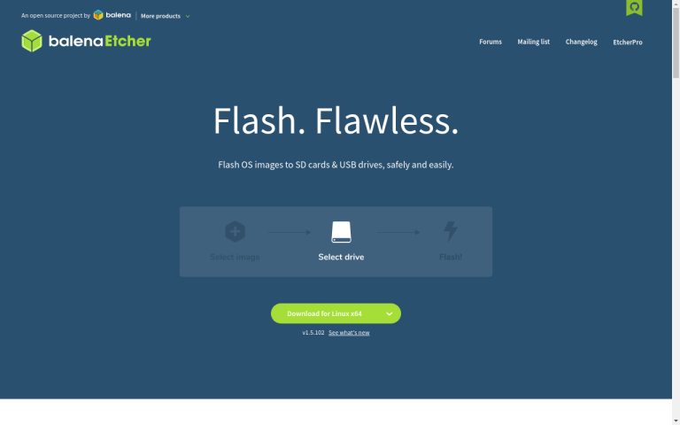

your number one source for linux phone news
~ Community | News | Operating Systems | Software | Devices | Contact Us | About Us ~
Just like you can with many SBCs (single-board computers) from the likes of companies like the Raspberry Pi Foundation and Pine64, you have the ability to easily swap out operating systems on the fly with your PinePhone. Many people think the process of switching their OS is some kind of daunting task, but it is actually very easy.
With your PinePhone, just like you can with any of these ARM-based SBCs, you can easily write an image to an SD card and boot your device from that. you will only need a few things to achieve this task:
If you have these things, you are all set to move onto the next step.
While you may have gotten a Ubports Community Edition PinePhone, you may want to try out other distributions without affecting the installation of Ubuntu Touch on your PinePhone's eMMC. You could be wondering how to swap out operating systems on your Braveheart Edition, or gathering your information for the PostmarketOS Community Edition that will soon be shipping to eager buyers.
There are now a wide array of operating systems available on the PinePhone from many community-supported projects. From Ubuntu Touch, to Mobian, to Arch, you’re sure to find something you’ll love.
You can find detailed information on each PinePhone operating system and where to download them at the PinePhone software wiki.
Once you know which operating system you want to try on your PinePhone, download the image, extract it to a sensible location, and get ready to flash it to your SD card.
There are several ways you can do this. If you really know what you are doing, you can use the dd command to write the image to the SD card directly from the terminal. We are going to assume that you are completely new to this, though, and give you a friendly GUI option.
Now, if you are on a Linux distribution, you can use this friendly tool that I have always loved, Disks, or gnome-disks. To grab it on your machine, simply open up a terminal and type the following.
If you are on a Debian or Ubuntu based distro, use this command:
sudo apt install gnome-disks
If you are on an Arch based distro, use this command:
sudo pacman -S gnome-disks
Once installed, you should now have an application called Disks in your menu. Open it, and you will be greeted like this:
When your SD card is inserted, you will see it in Disks. Click on it, and then select Restore Disk Image, where you will then be prompted to select your extracted .iso file. When everything is selected, you will be prompted to enter your administrative password before the image is written to the SD card.
All you have to do now is sit back and wait. When the image write is successfully finished, you can safely eject it from your computer, slide it into your PinePhone, and boot! Enjoy testing your new Linux phone operating system.
What if I Am Not on Linux?
If you are on a Windows or MacOS machine, you can still write images to SD cards. Download an application called Balena Etcher (it is available for Linux, too!), and then install it to your Windows or MacOS machine as you would any other app. The process for writing images to your SD card is very similar here as it is for the Disks utility on GNU/Linux.